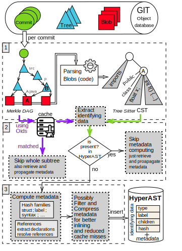
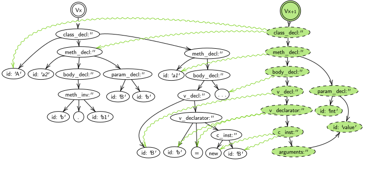

Intro
HyperAST code is open-source and available on Github. This book is also open-source and available on Github in the same repo.
HyperAST is a research project at IRISA, Rennes, France. It is a tool to analyze git repositories and extract information from them. It is written in Rust.
The HyperAST is not made for to analyse a single repository. It is made to analyse a set of repositories over time. It is meant to analyse the evolution of a code base over time, to understand where a bug is comming from, to see how a piece of code has evolved over time, etc.
It is meant to be state of the art and fast to be able to be used on big code bases in real time.
This book is here to make it easier to understand how to use HyperAST for any programmers(understanding the API but mainly how to use the GUI). It it also here to explain how to contribute to the project (mainly add support for new language).
HyperAST and Coevolution by Stable Diffusion
How to install Rust toolchain
Install Rust
Setup Nightly Channel
We use the nightly toolchain of the Rust compiler in this project. It is stable enough and offers useful features.
Those commmands will install the nightly toolchain and set it as default.
> rustup toolchain install nightly
> rustup default nightly
To go back to the stable toolchain after you are done with the project, run:
> rustup default stable
Troubleshooting :
MacOS
issue with trunk https://stackoverflow.com/questions/72146492/unable-to-execute-trunk-serve
cargo install wasm-bindgen-cli
./concrete_applications/concrete_applications.md
Quickstart
In this section you'll find quickstart example about the HyperAST.
Quickstarts mentioning (GUI) are using the graphical interface of the HyperAST.
The project is divided in two parts :
- the GUI for having a graphical interface with the HyperAST
- the API for having full control over the HyperAST
Compute code metrics (GUI)
A scripting language is available to compute metrics on multiple commits in the repository of your choice.
Track code (GUI)
The HyperAST enables you to easily track code changes across thousands of commits.
Add a TreeSitter grammar
In the HyperAST you can add a TreeSitter grammar to handle more programming languages.
Compute code metrics (GUI)
A scripting language is available to compute metrics on multiple commits in the repository of your choice.
The interface of the scripting language

Track code (GUI)
The HyperAST enables you to easily track code changes across thousands of commits.


Add a TreeSitter grammar
In the HyperAST you can add a TreeSitter grammar to handle more programming languages.

Concrete applications
Here are some concrete example of the using the HyperAST on a real use case.
Track hyper parameters in Stockfish code base
Example of tracking a variable in a large code base.
See also Compute code metrics (GUI)
Track hyper parameters in Stockfish code base
Architecture
This document describes the architecture of the project. It is suppose to be highly technical and is not meant to be read to use the HyperAST.
Overview of the structure
-
hyper_ast core crate representing the HyperAST structure
-
hyper_app graphical interface to interact with the HyperAST (web and native support)
- compute metrics
see also Compute code metrics (GUI)
- code tracking
see also Track code (GUI)
- compute metrics
-
server Rest API and server to remotely access HyperAST
-
book your currently reading it!
-
cvs/git facilities to handle the git control versioning system
-
gen/tree-sitter/* tree sitter grammars of supported language
- Java
- C++
- Xml use for maven's pom.xml
-
hyper_diff algorithms to compute AST diffs
-
egui_addon small addon of functionalities used in hyper_app
How to contribute
If you want to contribute to the project. The whole repositorie of the project is available on github
Support of progamming language
Language supported
- Java
- C++
- XML
- TypeScript
How to add a new language
It is for now NOT a simple task to add a language. The objective is it to be as simple as possible.
Unlike Github which only stores character additions and deletions in the source code (wich is not language dependant), HyperAST needs to know the semantics of the language to be able to analyse it.
The final objective is to be able to add a new language by only adding the grammar of the language and few more informations without having to modify a lot the code of the project.
Scientific Literature
Structure of the HyperAST explained in the paper

Example detailed in the Paper
